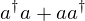
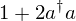
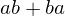
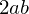
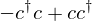
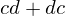
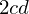
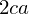

Test boson and fermion commutators and anticommutators#
from sympy import *
init_printing()
from sympy.physics.quantum import *
from sympy.physics.quantum.boson import *
from sympy.physics.quantum.fermion import *
from sympy.physics.quantum.operatorordering import *
These distinguishable single-mode boson/fermion operators, but do not in general need to be independent.
a, b = BosonOp("a"), BosonOp("b")
c, d = FermionOp("c"), FermionOp("d")
Boson#
Commutator(a, Dagger(a)).doit()

AntiCommutator(a, Dagger(a)).doit()

normal_ordered_form(AntiCommutator(a, Dagger(a)).doit())

In general, different boson operators do not commute, and we do not know anything about the commutation and anticommutation relations:
Commutator(a, b).doit()
AntiCommutator(a, b).doit()

But often different bosons are independent and do commute. We can use the independent=True hint to doit method in this situation:
Commutator(a, b).doit(independent=True)

AntiCommutator(a, b).doit(independent=True)

Fermion#
AntiCommutator(c, Dagger(c)).doit()
Commutator(c, Dagger(c)).doit().expand()

In general different fermion operators do not commute (if they are dependent):
Commutator(c, d).doit()

And we do not know their anticommutator:
AntiCommutator(c, d).doit()

But if we know that they are independent we can indicate this with the independent=True hint:
Commutator(c, d).doit(independent=True)
and in this case the anticommutator is:
AntiCommutator(c, d).doit(independent=True)

Mix of fermion and boson operators#
Boson and fermion operators commute:
Commutator(a, c).doit()
So their anticommutator is this one:
AntiCommutator(a, c).doit()

Versions#
%reload_ext version_information
%version_information sympy
| Software | Version |
|---|---|
| Python | 3.4.1 (default, May 21 2014, 01:39:38) [GCC 4.2.1 Compatible Apple LLVM 5.1 (clang-503.0.40)] |
| IPython | 2.1.0 |
| OS | posix [darwin] |
| sympy | 0.7.4.1-git |
| Thu Jun 05 15:27:54 2014 JST | |